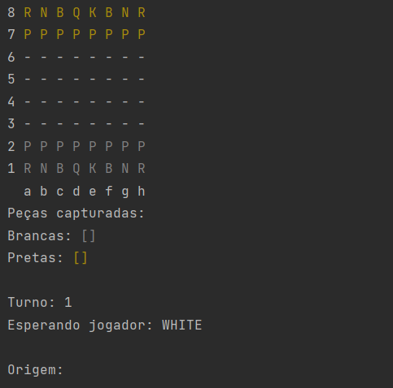
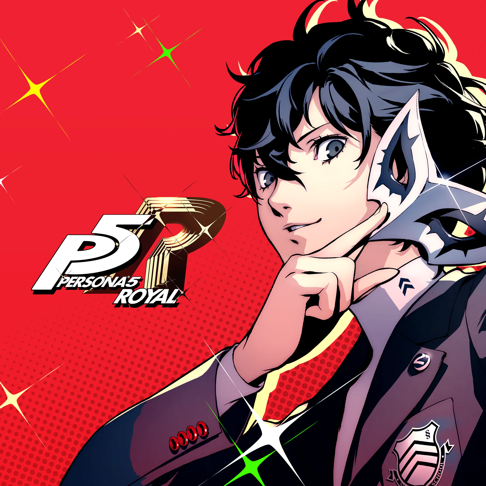
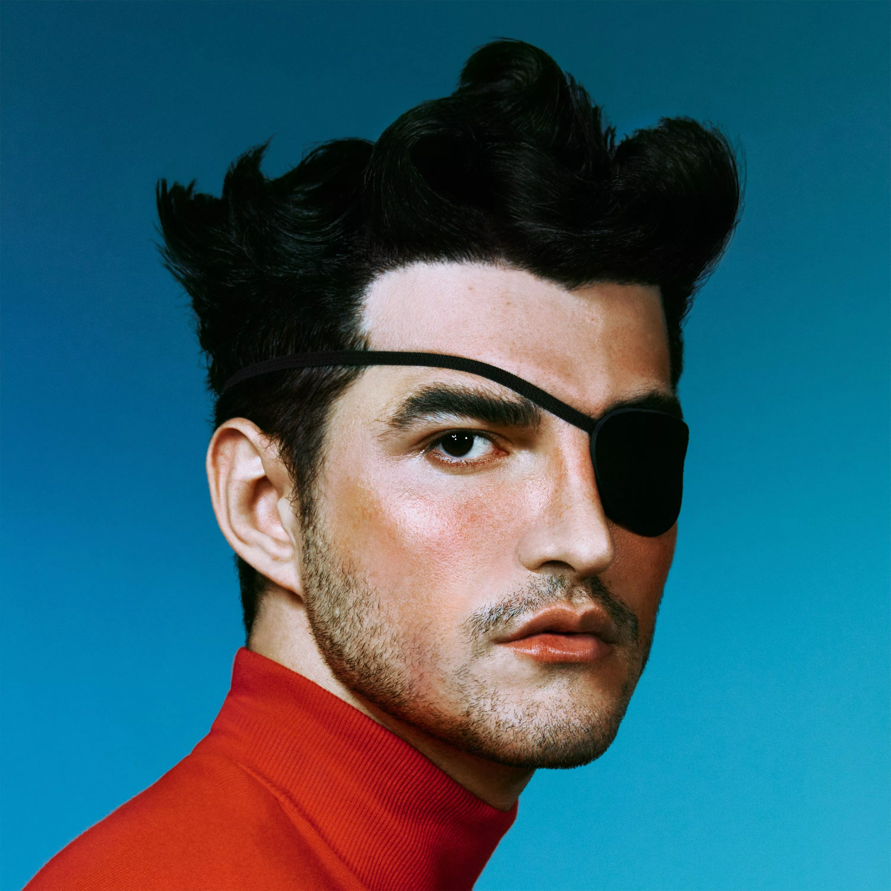
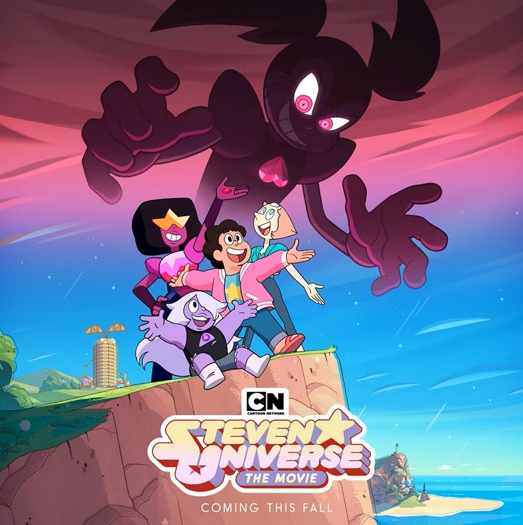

Bem Vindo ao meu portifolio
Sobre Mim
Eu sou André Luiz Junqueira Poles, moro na cidade de Tatuí, curso Análise e Desenvolvimento
de
Sistemas na Fatec Sorocaba,
sou apaixonado em tecnologia, estudo e desenvolvimento em JavaScript, Java, Python e C, mas sempre
busco
aprender o máximo de tecnoligas possíveis.
Gosto muito da parte de desenvolviemento BackEnd, mas estou procurando aprender mais sobre
FrontEnd para no futuro me tornar um desenvolvedor FullStack.
Fui vencedor do polo de Sorocaba na primeira fase do Interfatecs 2023 junto a minha equipe
MORDERAM MEU GATO.
Projetos
-

Xadrez
Projeto de um Xadrez feito em Java, realizado sem interface visual, 100% no prompt de comando. Fiz esse projeto para testar meus conhecimentos da linguagem Java e os pilares da orientação a objeto.
-
Calculadora
Uma calculadora simples que realiza as operações de soma, subtração, multiplicação e divisão. Fiz esse projeto para treinar a utilização do HTML, CSS e JavaScript.
-
Guia Turístico
Um site para busca de lugares turísticos ou de lazer para aproveitar o tempo livre. O projeto está sendo desenvolvido nas matérias de Engenharia de Software em grupo.
Meus Gostos
-
Meu Jogo Favorito
Persona 5
Um jogo sobre o inconsciente coletivo, a concepção da mente humana, desejos distorcidos, magia e corrupção política. Precisa de mais alguma coisa?
-
Meu cantor favorito
Jão
A complexidade das letras, as memórias e sentimentos envolvidos em cada música me prendem demais, grande parte das músicas me lembram pessoas muito importantes para mim.
-
Meu desenho favorito
Steven Universo
Um desenho sobre mudança, aceitação e diversidade, eu cresci junto ao show e este me deu suporte para ser quem sou hoje. Ps: As músicas são maravilhosas.